Most of the planet is water, and most of that is dark, cold, and barely seen. Here is some of what lives down there, in the highest resolution I could find.
Every photo here is the full-resolution original. Click or tap any one to zoom all the way in. scroll to dive
Giant kelp · Macrocystis pyriferaIt grows up to two feet a day, the fastest-growing thing in the sea that isn't a microbe.Kelp forest, Brittany · Laminaria sp.These aren't plants at all but brown algae, a forest grown by something that split from life's tree before plants existed.
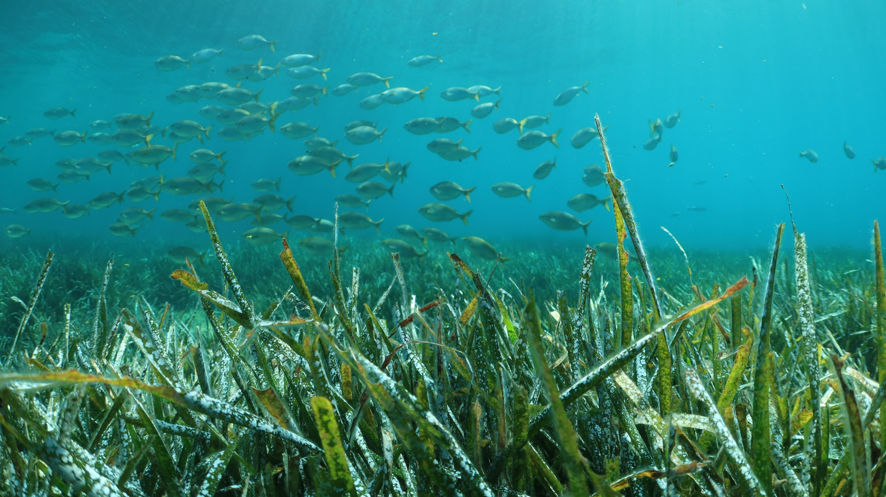
Neptune grass · Posidonia oceanica · one clone ~100,000 yrs oldA single seagrass meadow off Ibiza is one continuous clone roughly 100,000 years old, older than our species' cave paintings.Red alga · Rhodophyta · lineage > 1 billion yrsIts red pigment lets it photosynthesize deeper and darker than any other seaweed, and its lineage is over a billion years old.
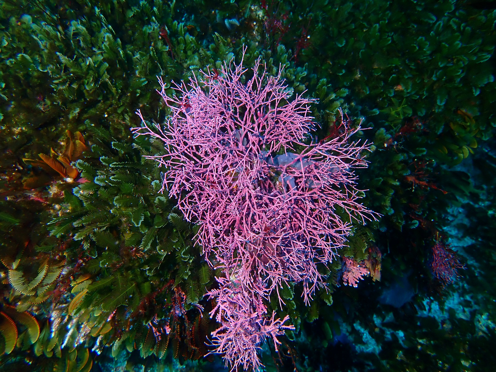
Coralline seaweed · CorallinalesThese seaweeds turn themselves to stone, and their pink crusts tell coral and abalone larvae where to settle.
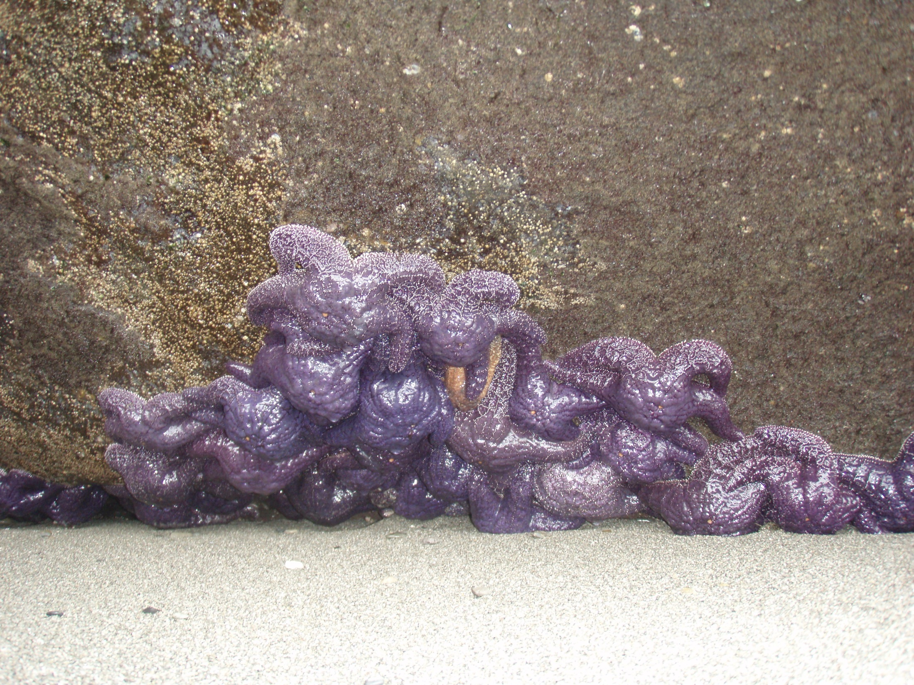
Ochre sea stars · Pisaster ochraceusThis is the animal that gave science the term keystone species: pull it off the rock and the whole community collapses.Giant green anemone · Anthopleura xanthogrammicaThe neon green is farmed algae plus a glowing protein; starve it of light and it fades to ghostly white.Sunflower sea star · Pycnopodia helianthoides · up to 24 armsIt has up to 24 arms and 15,000 tube feet, then a wasting disease erased about 90 percent of them in a few years.Gooseneck barnacles · Pollicipes polymerusBefore anyone knew that birds migrate, Europeans were sure these barnacles hatched into geese, which named the barnacle goose.
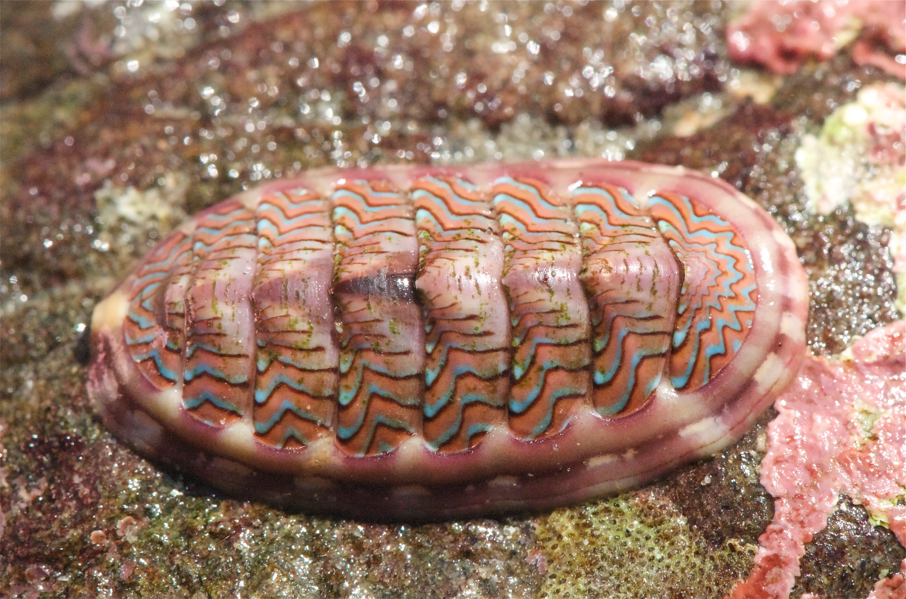
Lined chiton · Tonicella lineataIt rasps food with a tongue capped in magnetite, actual iron ore, a magnet's worth of metal in its mouth.
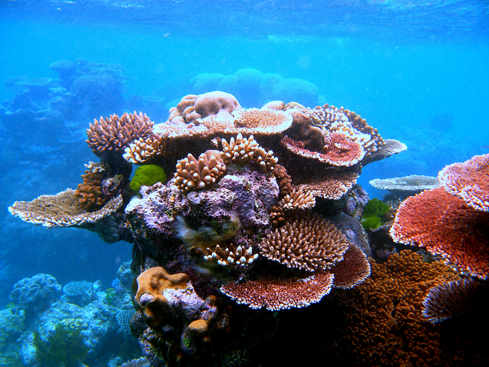
Great Barrier Reef · Flynn Reef, Australia · ~2,900 reefsThe only living structure visible from space, and it isn't one reef but nearly 3,000, built by trillions of polyps over 20,000 years.Brain coral · Leptoria phrygiaThe maze is built by polyps sharing connected mouths in continuous valleys, channeling food and fighting rivals along a shared front.Galaxy coral · Galaxea fascicularisAfter dark it unrolls sweeper tentacles up to 30 cm long, loaded with a separate venom, purely to sting and kill the corals next door.Lyretail anthias · Pseudanthias squamipinnisEvery anthias is born female; when the dominant male dies, the top female switches sex within days and grows working testes.
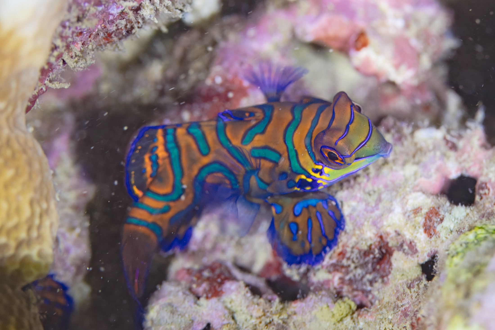
Mandarinfish · Synchiropus splendidusIt is one of only two animals that make blue with actual blue pigment cells, and it wears no scales, just a foul, toxic mucus.Spotfin lionfish · Pterois antennata · stomach swells ~30xIt corners prey with those fans, then swallows in a gulp so fast its stomach balloons to about 30 times its normal size.
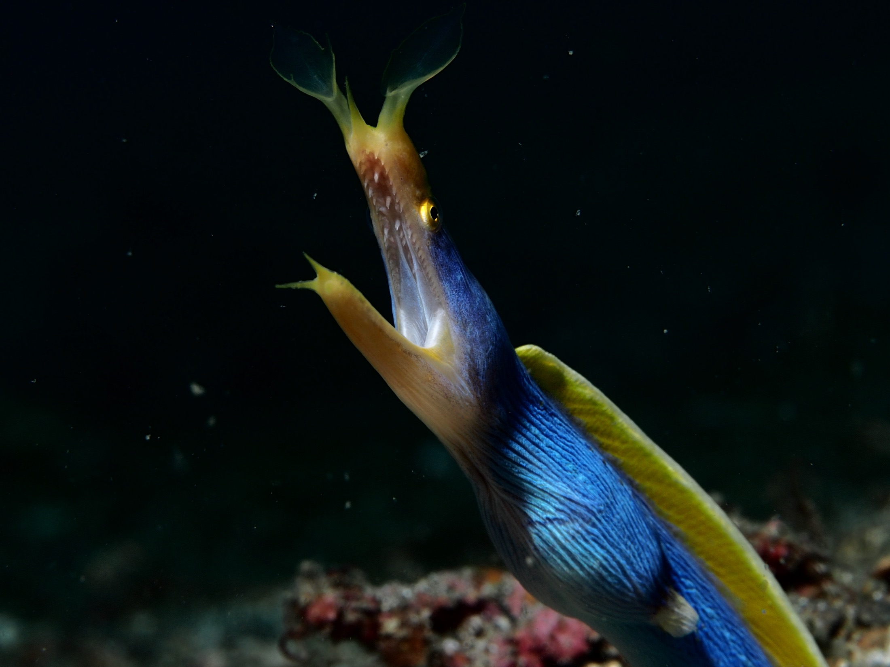
Blue ribbon eel · Rhinomuraena quaesitaEvery electric-blue ribbon eel is male; if it lives long enough it turns yellow and becomes female, flipping both sex and color.Moorish idol · Zanclus cornutusIt is the lone survivor of its entire family, with no close living relatives, and its trailing white fin can be longer than its body.Parrotfish · Chlorurus sordidusIt blows a transparent mucus sleeping bag each night as a parasite net, and the white sand on tropical beaches is largely parrotfish poop.Giant sea fan · Annella mollisA sea fan always grows flat and broadside to the current, turning its fine lattice into a vertical net for drifting plankton.Fluorescent coral · under blue lightCorals glow with proteins that act as sunscreen, and that same protein family became the green fluorescent tags that won a 2008 Nobel Prize.
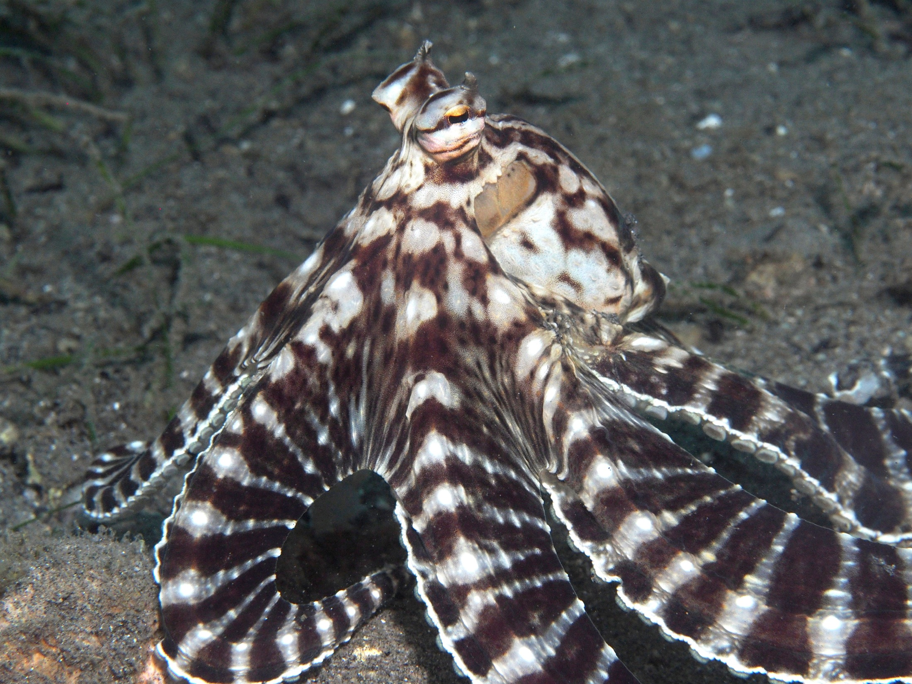
Mimic octopus · Thaumoctopus mimicus · copies 15+ animalsIt is the only animal known to impersonate other species at will, shape-shifting to copy sea snakes, lionfish and flatfish as the threat demands.Broadclub cuttlefish · Ascarosepion latimanusHunting, it pumps fast bands of dark color down its arms, a moving billboard that appears to hypnotize crabs into freezing while it closes in.Octopus skin, up close · Octopus bimaculoidesEach dot is one pigment sac wired to the brain, and the skin itself carries the light-sensing protein in eyes, so an octopus can in a sense see color with its skin.
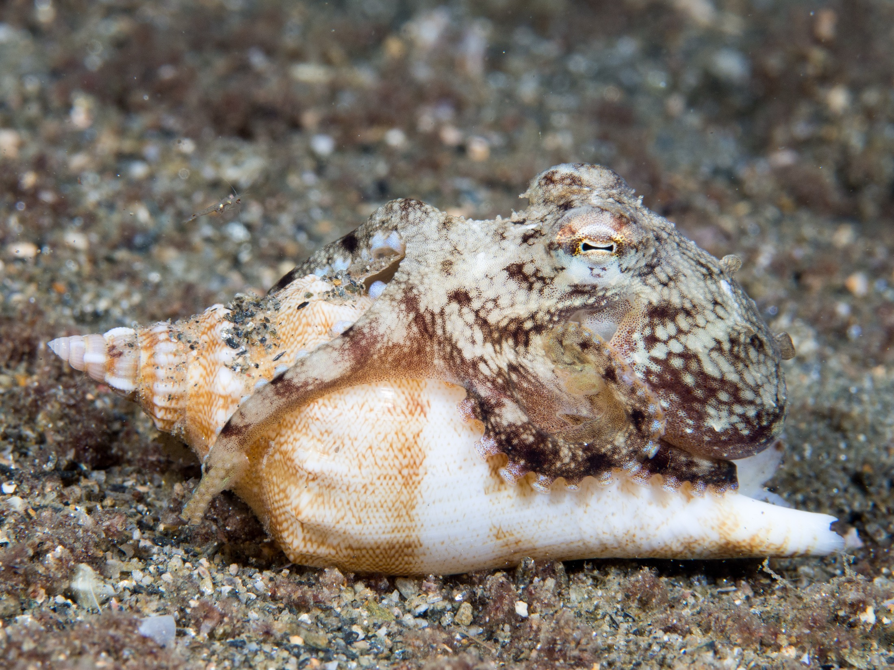
Coconut octopus · Amphioctopus marginatusOne of the only invertebrates to use tools: it hoards coconut and clam shells, then reassembles them into a portable suit of armor.
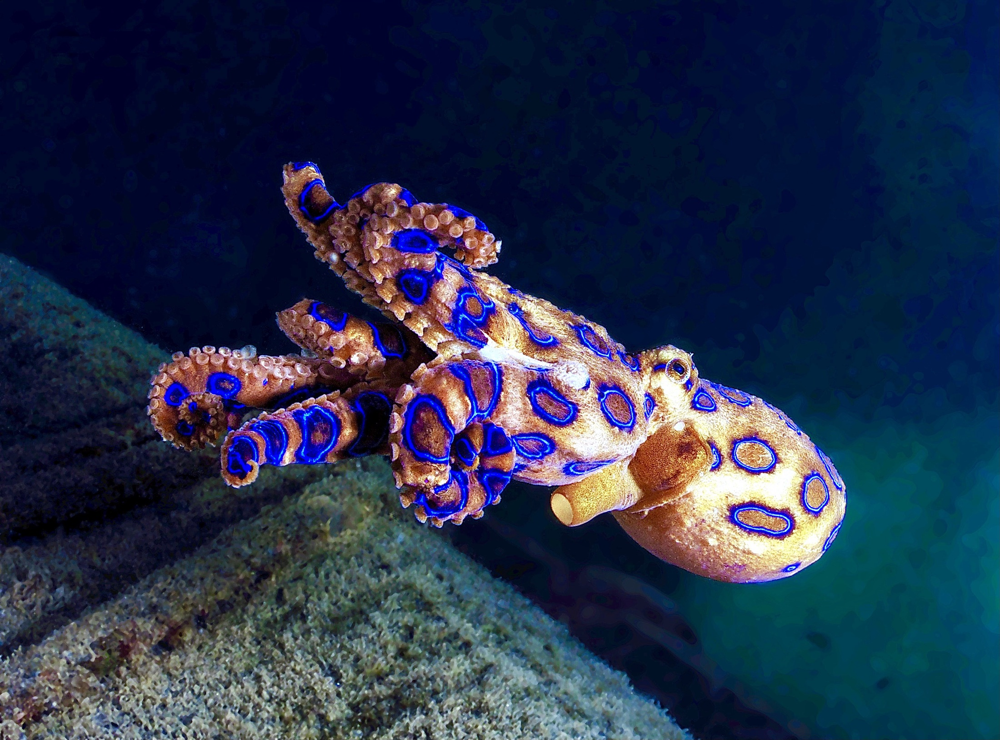
Blue-ringed octopus · Hapalochlaena sp. · venom for 26 adultsSmaller than a golf ball, it carries enough toxin to kill 26 adults in minutes, and there is no antivenom; the blue rings flash a second before it bites.Crocodilefish · Papilloculiceps longicepsEven its eyes are camouflaged: a frilly lacework grows over the pupil to break up the tell-tale round shape, so the whole fish vanishes into the rubble.Leaf scorpionfish · Taenianotus triacanthusIt sheds its whole skin like a snake every couple of weeks to stay clean, and rocks back and forth to mimic a dead leaf drifting in the surge.Cuttlefish eye · Sepiida · W-shaped pupilCuttlefish are colorblind yet camouflage in perfect color; the bizarre W-shaped pupil may let them read color from the way light blurs.Giant Pacific octopus · Enteroctopus dofleini · three heartsThe largest octopus has three hearts and blue, copper-based blood, and keeps two-thirds of its half-billion neurons in its arms, which taste and decide on their own.
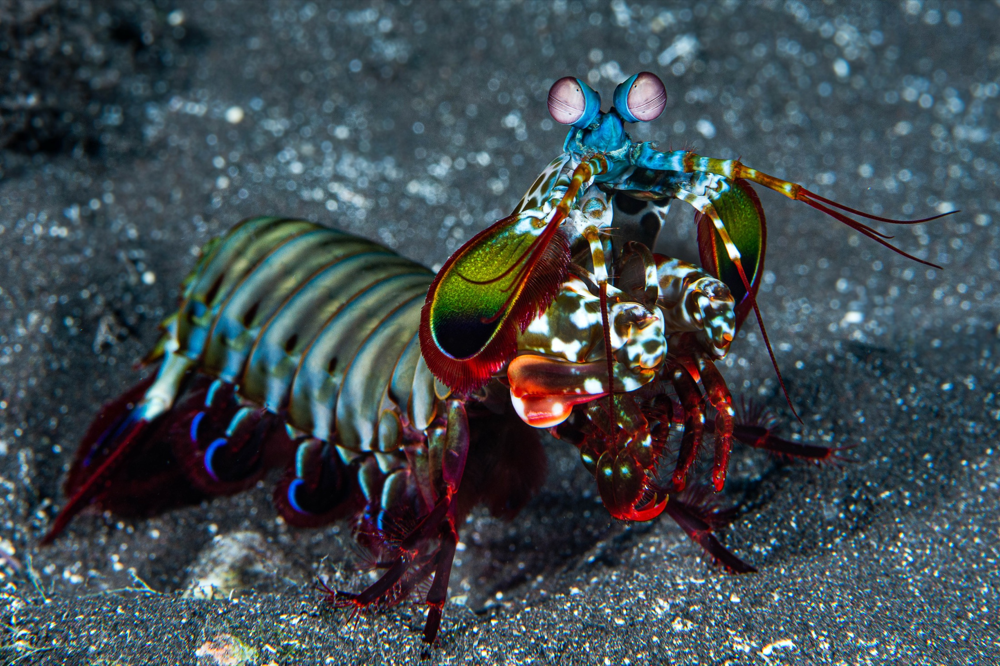
Peacock mantis shrimp · Odontodactylus scyllarus · punch ~23 m/sIts club strikes so fast the water boils into a flash of light and heat, and the blow lands with about 1,500 newtons, enough to crack aquarium glass.Mantis shrimp eyes · Odontodactylus scyllarus · 16 photoreceptorsIt carries up to 16 kinds of color receptor to our three, and is the only animal known to see circular-polarized light, yet the eye does the work, not the brain.Anna's sea slug · Chromodoris annaeIts blue is not pigment but structural color, the same nanoscale light-trick that colors a morpho butterfly's wing.
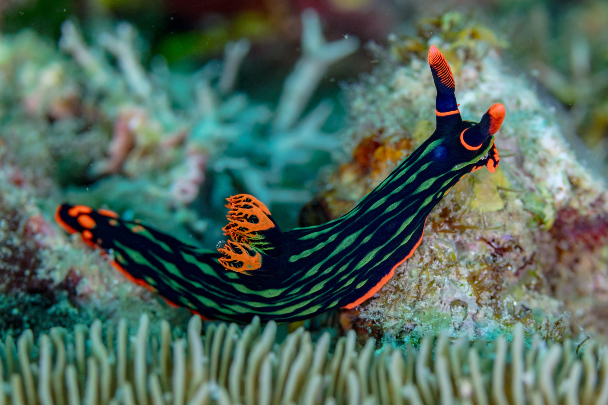
Variable neon slug · Nembrotha kubaryanaIt steals toxins from the sea squirts it eats and oozes them as a defensive slime, the same chemicals now studied as anticancer leads.Leaf sheep · Costasiella kuroshimae · ~5 mmThis grain-of-rice slug steals working chloroplasts from the algae it eats and keeps them alive, so it can photosynthesize like a plant.
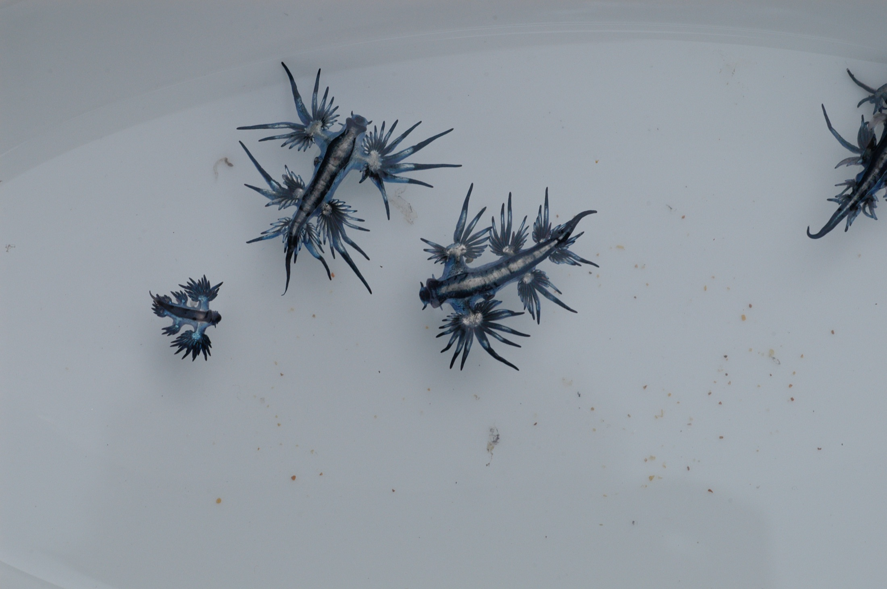
Blue dragon · Glaucus atlanticusThis thumbnail-sized slug eats the Portuguese man o' war and stores its stinging cells, concentrating them so its own sting outdoes the jellyfish it robbed.Harlequin shrimp · Hymenocera pictaIt eats starfish alive and almost nothing else, flipping them over and feeding on the still-living tube feet for days to keep the meal fresh.Flower urchin · Toxopneustes pileolusThose pretty blossoms are venomous pincers; it is rated one of the most dangerous sea urchins in the world, and a sting can cause paralysis.Blue sea star · Linckia laevigataIt can regrow an entire body from a single severed arm, and that lone arm crawling off to rebuild itself is nicknamed a comet.Clownfish and anemone · Amphiprion ocellarisA clownfish isn't born immune to the stings; it earns it by brushing the tentacles to coat itself in the anemone's own mucus, a disguise it must keep renewing.Cleaner shrimp and moray · Lysmata amboinensisThe shrimp walks straight into a predator's open jaws and survives by waving white antennae the eel reads as a no-eat signal, then cleans between its teeth.Goby and pistol shrimp · Amblyeleotris guttataA bodyguard-for-housing deal: the nearly blind shrimp digs the burrow they share and keeps an antenna on the goby, whose tail-flick warns them both to dive.
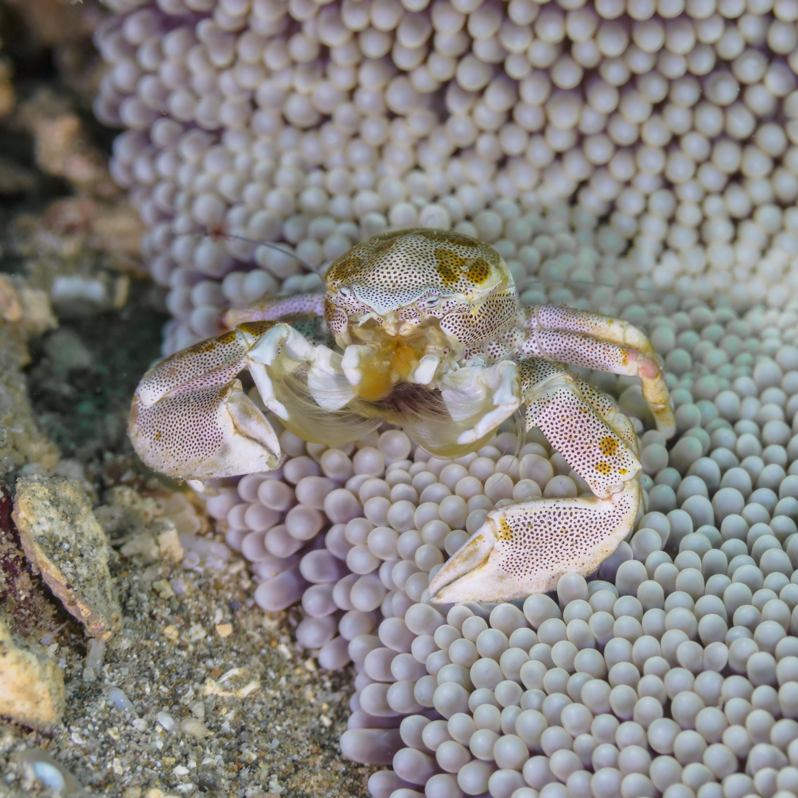
Porcelain crab in an anemone · Neopetrolisthes maculatusIt doesn't fight for its anemone home, it fishes from it, unfurling feathery nets to strain plankton, and snaps off a limb to escape if grabbed.Guard crab in coral · Trapezia bidentataPaid in fat and mucus by the coral, these thumbnail crabs are its standing army, fighting off crown-of-thorns starfish many times their size.Imperial shrimp, hitchhiking · Periclimenes imperatorIt commutes on a living taxi, riding a sea cucumber to graze the food it stirs up, hopping off near a meal and re-boarding, often color-matched to its host.Cleaner wrasse at work · Labroides phthirophagusCleaner wrasses run honest businesses but cheat, since healthy mucus tastes better than parasites; clients punish cheats by chasing them off.Lion's mane jelly · Cyanea capillata · tentacles ~37 mThe largest ever found trailed tentacles about 37 metres long, longer than a blue whale, which makes it a contender for the longest animal on Earth.Comb jelly · CtenophoraThat running rainbow is not bioluminescence; it is plain white light shattered by eight rows of beating cilia, the largest cilia ever to evolve.Immortal jelly · Turritopsis dohrnii · ~4.5 mmStarved or injured, this jelly can run its life cycle in reverse, melting back into a polyp and starting over, in principle without end.Pacific sea nettle · Chrysaora fuscescens · ~1,000 neuronsIt has no brain, blood or heart, yet its golden bell pulses on a loose net of about a thousand neurons, and its torn-off arms keep stinging on their own.Moon jelly · Aurelia aurita · ~95% waterIt is about 95 percent water and has no eyes; the four pale clover shapes glowing inside the bell are its gonads.
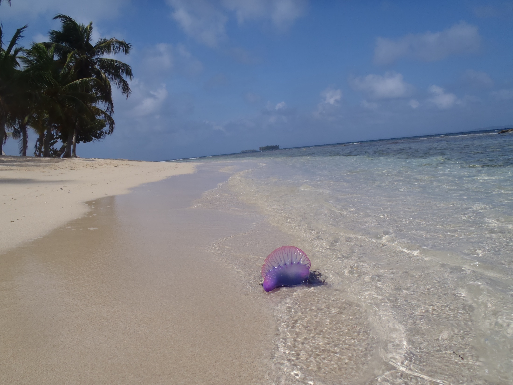
Portuguese man o' war · Physalia physalisIt looks like one animal but is a colony of four kinds of specialized clones that can't survive alone, sailing as a single fleet on its gas-filled float.Compass jelly · Chrysaora hysoscellaThe sixteen brown rays really do work like a compass rose, and every one is born male before turning female.Venus girdle · Cestum veneris · up to 1.5 mThis comb jelly isn't bell-shaped at all but a transparent ribbon up to a metre and a half long, swimming with a slow snake-like undulation.Salp chain · Pegea confoederataSalps aren't jellyfish but tunicates, closer kin to us than to jellies, and their fast-sinking waste makes them one of the ocean's best carbon pumps.
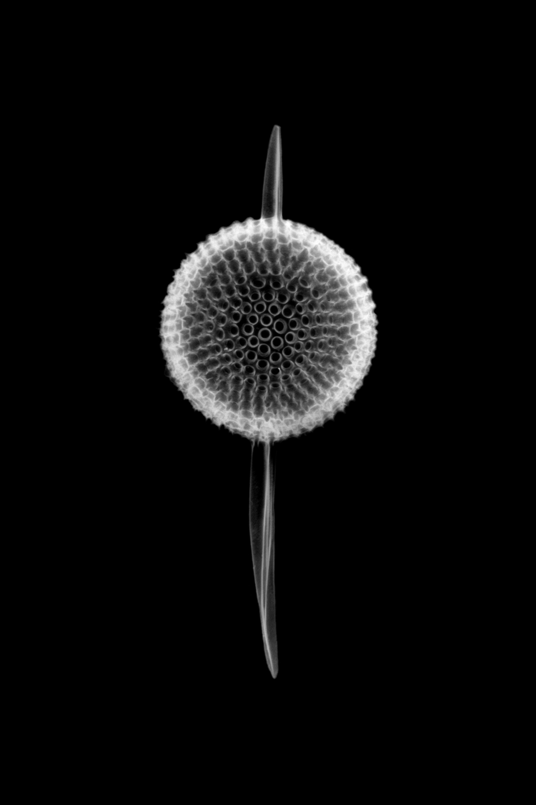
Radiolarian · Stylosphaera coronata laevis · single cellRadiolarians build skeletons of pure glass, and when they die their shells rain down and pile into seabed ooze hundreds of metres thick.Radiolarian · Stylodicta clavata · ~30 million yrs oldThis glass lattice, finer than a snowflake, was spun by a single-celled organism more than 30 million years ago.Radiolarian · Spongotractus pachystylusA radiolarian is a single cell that fishes, extruding sticky threads through the holes in its glass cathedral to snare other plankton.Foraminifera · Neogloboquadrina pachydermaThis plankton's shell coils left or right depending on the water temperature, so geologists read the spiral in seabed cores like a fossil thermometer.
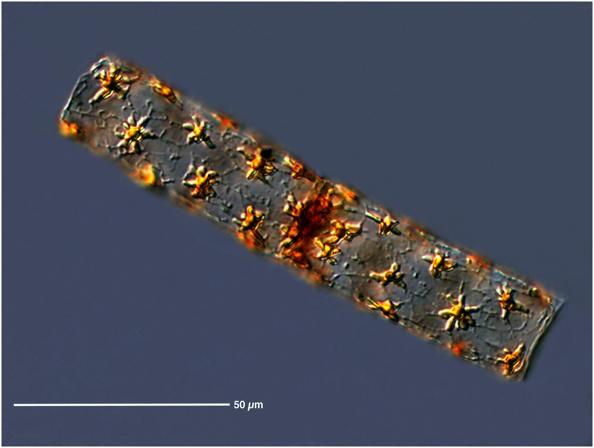
Diatoms · light micrograph · ~20% of our oxygenDiatoms make about a fifth of the oxygen you breathe, roughly one breath in five, while drifting unseen in sunlit seawater.Copepod · Copepoda · >500 body-lengths/secCopepods may be the most numerous animals on Earth, and for their size they are among the fastest, jolting away at over 500 body-lengths a second.Glowing plankton · Pyrocystis fusiformisThese single cells flash blue only when jostled, a burglar alarm that startles the grazers trying to eat them and draws in bigger predators.Sea sparkle · Noctiluca scintillansEvery spark is a single cell the size of a sand grain, flashing the instant the water moves; by day the same bloom can turn the sea tomato red.
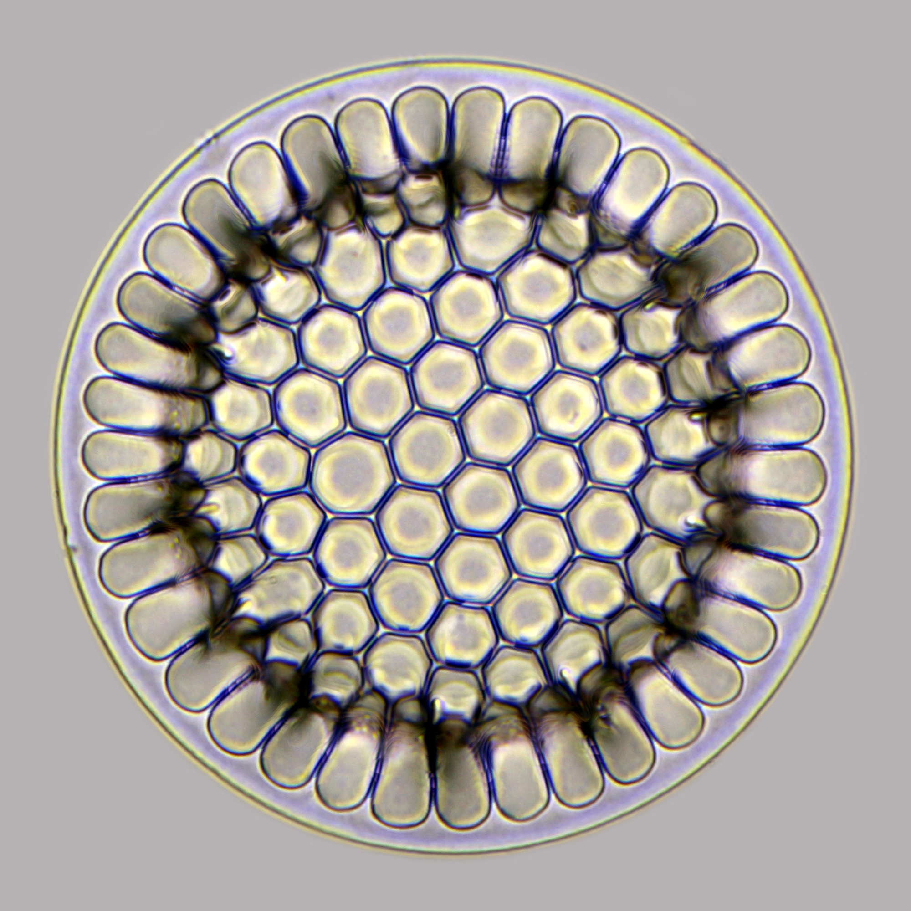
Diatom shell · Stephanopyxis grunowiiIts pores are spaced so precisely that engineers study diatoms as natural blueprints for photonic crystals and nanoscale filters.
where the sunlight gives out
Into the Dark
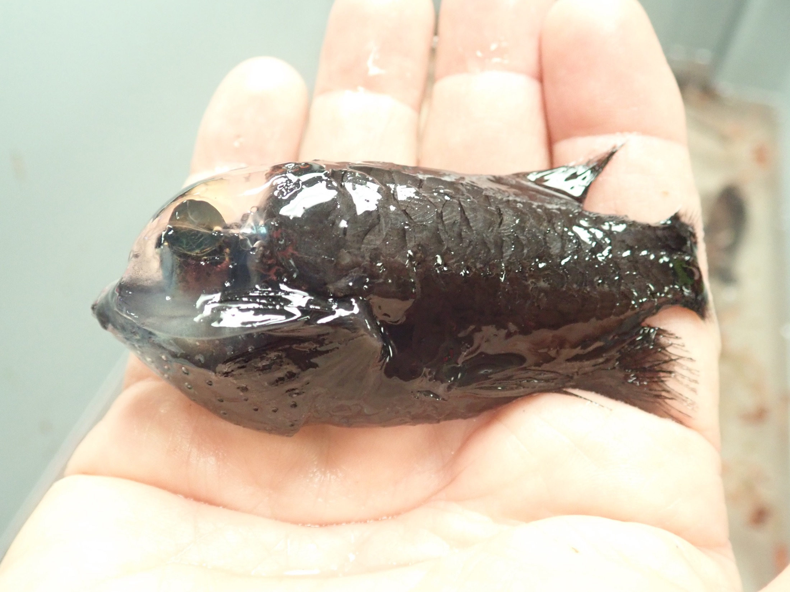
Barreleye · Macropinna microstomaThose glowing green orbs are its eyes, aimed straight up through a transparent forehead so fragile it is destroyed the moment the fish is hauled to the surface.Deep-sea anglerfish · Ceratiidae · male 60x smallerThe tiny male bites the female, fuses into her flesh and dissolves into a permanent sperm lump; for years the two were catalogued as different species.
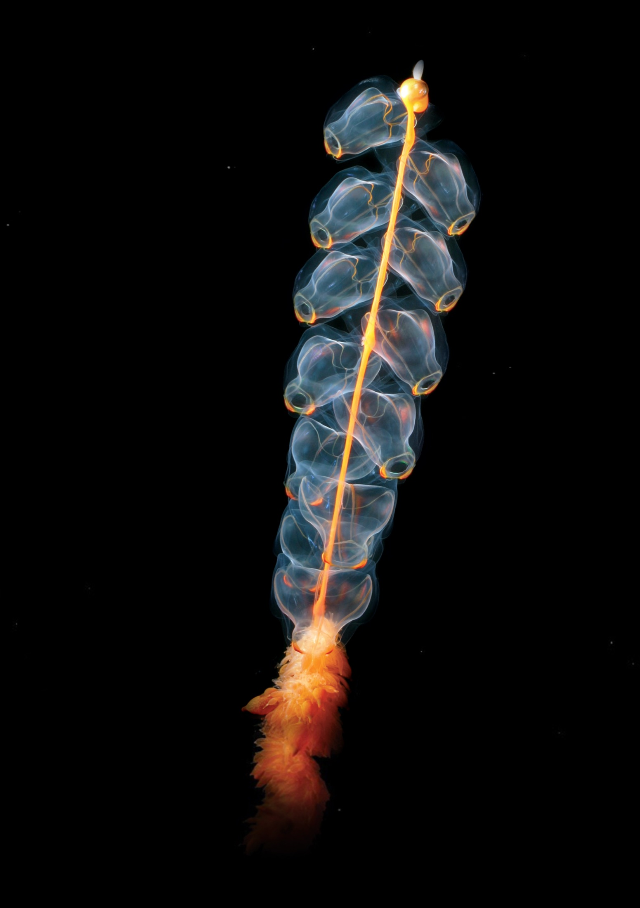
Siphonophore · Marrus orthocannaIt is not one animal but a swimming colony of identical clones, each built for one job; some of its relatives grow longer than a blue whale.Dumbo octopus · Grimpoteuthis sp. · down to ~7,000 mThe deepest-living octopuses known, they have no ink sac (useless in the dark) and instead flap a pair of elephant-ear fins to fly through the black.
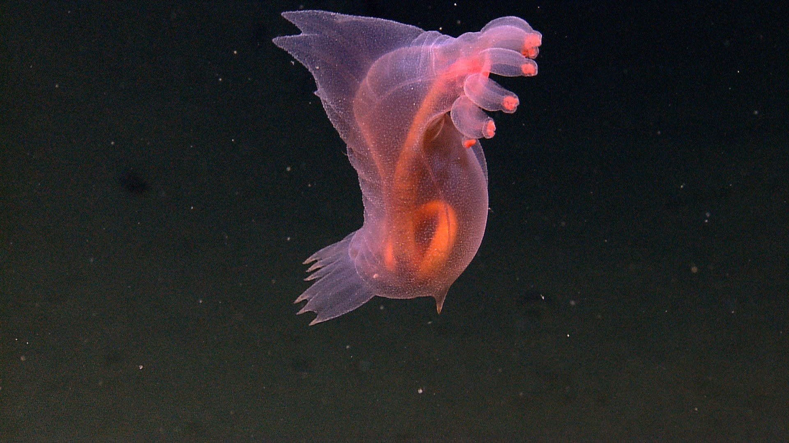
Swimming sea cucumber · Enypniastes eximiaThis one gave up crawling to swim, and is so transparent you can watch its dinner move through its gut; attacked, it sheds glowing skin onto the predator.Vampire squid · Vampyroteuthis infernalisDespite the name it drinks no blood; it is a gentle scavenger of marine snow, and the only cephalopod that lives its whole life in water too low in oxygen for almost anything else.Alarm jelly · Atolla sp. · caught at 800 mWhen something bites it, this blood-red jelly fires a pinwheel of blue light, a burglar alarm meant to summon an even bigger predator to attack its attacker.Giant tubeworms · Riftia pachyptila · grows ~85 cm/yrThe fastest-growing marine invertebrate has no mouth, gut, or anus at all, and is fed entirely by sulfur-eating bacteria farmed inside its own body.
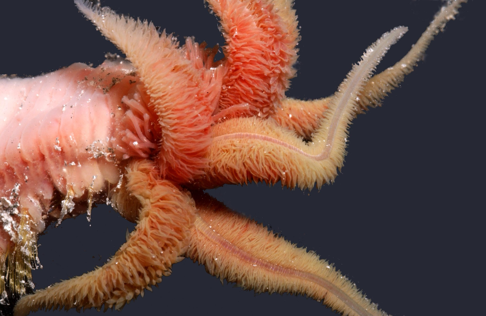
Pompeii worm · Alvinella pompejana · tail near 80 CMaybe the most heat-tolerant animal alive: its tail bathes near 80 C inside the chimney while its head sits in 22 C water, a 60-degree gap across one body.Yeti crabs · Kiwa tyleriThese Antarctic vent crabs farm their own food, growing bacteria on the bristles of their undersides and combing the crop off to eat; the hairy chest earned them the nickname Hoff crabs.Black smoker · hydrothermal chimneys · grow ~30 cm/dayThese mineral spires precipitate out of 230 C fluid and can grow a foot a day, out-building a skyscraper before they topple under their own weight.Scaly-foot snail · Chrysomallon squamiferumThe only animal known to build its skeleton partly from iron, it wears a coat of iron-sulfide scales, effectively magnetic chain mail that the military has studied.A reef in the dark · Mid-Ocean Ridge · no sunlight at allThis whole community runs on bacteria oxidizing toxic hydrogen sulfide, making it one of the only large animal gatherings on Earth that would survive if the sun went out.Cold seep · Chile MarginCold seeps run cold, not hot, yet host the same kind of life, and the rock the animals sit on is literally built by microbes eating leaking methane.Emperor penguin · Aptenodytes forsteri · dives to 564 mIt dives deeper than any other bird, past 500 metres on a single breath, and its bones are nearly solid so it sinks instead of bobbing back up.Adelie penguins · Pygoscelis adeliaeLeaping clear of the surface lets them breathe without slowing, and a coat of trapped air bubbles can cut their drag by up to a third when a seal gives chase.Gentoo penguins · Pygoscelis papua · ~36 km/hGentoos are the fastest swimming birds on Earth, clocked at about 36 km/h, quicker than any human has ever swum.Weddell seal · Leptonychotes weddelliiThe southernmost-breeding mammal on Earth gnaws its own breathing holes through the sea ice with its teeth, a habit that wears them out and shortens its life.
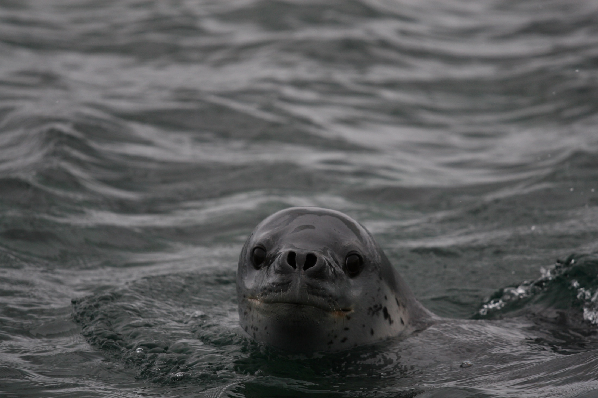
Leopard seal · Hydrurga leptonyxOne of the only seals that hunts warm-blooded prey, yet about half its diet is tiny krill, sieved through teeth shaped like interlocking combs.Narwhals · Monodon monoceros · ~10 million nerve endingsThe narwhal's tusk is a single tooth grown straight through its lip into a spiral packed with ten million nerve endings, so it can taste the saltiness of the sea.Antarctic krill · Euphausia superba · ~400 million tonnesBy weight they may be the most abundant wild animal on the planet, and when food runs short they molt to become physically smaller, effectively growing younger.Iceberg, from below · Svalbard · ~8/9 underwaterOnly about a ninth of an iceberg shows above water, and the hidden rest is so dense that a capsizing berg can release energy on the order of a small atomic bomb.Humpback whale · Megaptera novaeangliaeHumpbacks invented bubble-net feeding, blowing a spiral curtain of bubbles to corral fish, and the trick spreads from whale to whale like culture.
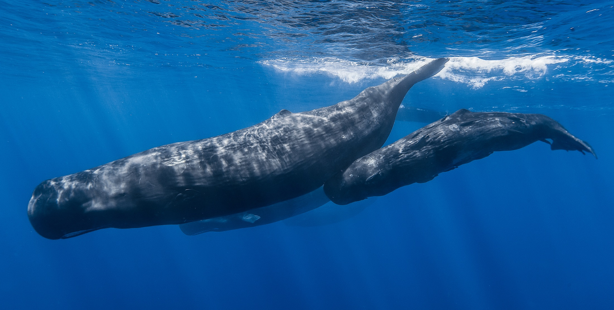
Sperm whales · Physeter macrocephalus · largest brain on EarthThey sleep standing up in the water, in ten-minute naps, the least sleep of any mammal, and carry the largest brain of any animal that has ever lived.Blue whale · Balaenoptera musculus · heart ~180 kgThe largest animal that has ever existed has a heart the size of a small car, and on a deep feeding dive its heartbeat can drop to two beats a minute.Whale shark · Rhincodon typus · largest fish aliveIts spots are as unique as a fingerprint, and researchers identify individuals with software first written by NASA to map the stars.
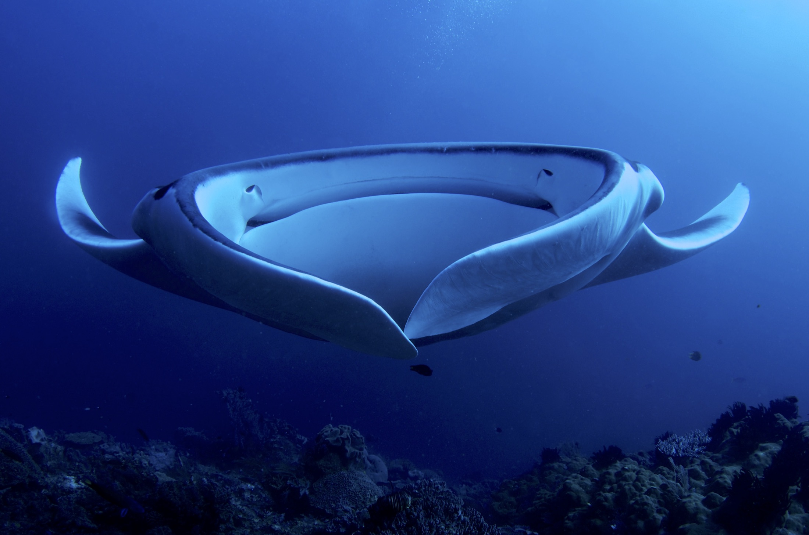
Giant manta ray · Mobula birostrisMantas have the largest brain-to-body ratio of any fish and have passed the mirror test for self-recognition, a club otherwise limited to apes, dolphins and elephants.
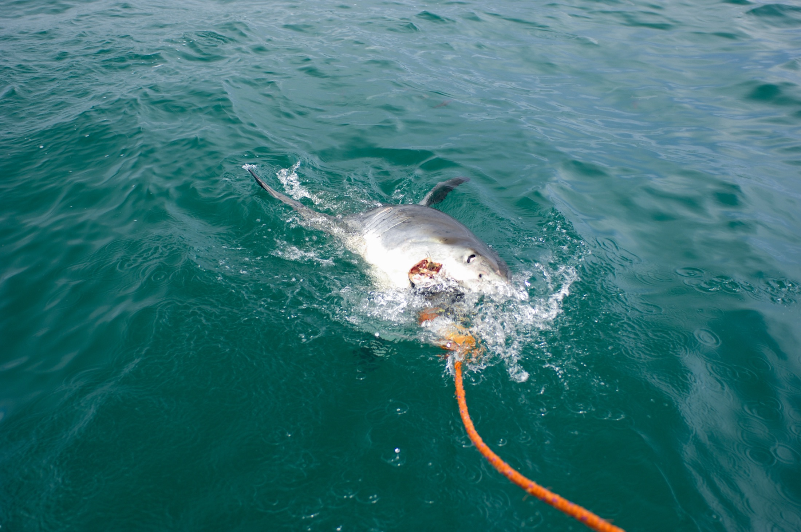
Great white shark · Carcharodon carchariasGreat whites are partly warm-blooded, keeping their muscles up to 14 degrees above the surrounding sea so they can sprint after fast prey in cold water.Scalloped hammerheads · Sphyrna lewiniThey gather in daytime schools of hundreds yet barely feed; the crowd is about rank and mating, with females jostling for the prime spots at the center.
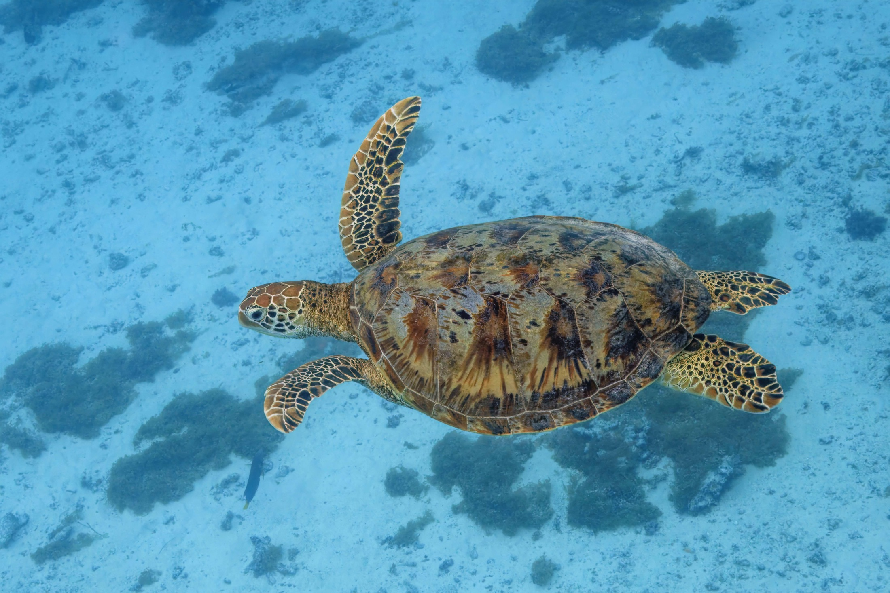
Green sea turtle · Chelonia mydasSea turtles navigate by Earth's magnetic field like a built-in compass, and females cross whole oceans to nest on the very beach where they hatched decades before.Leafy sea dragon · Phycodurus equesIt is the male that gets pregnant, carrying up to 250 eggs fixed to the underside of his tail and brooding them for weeks until they hatch.
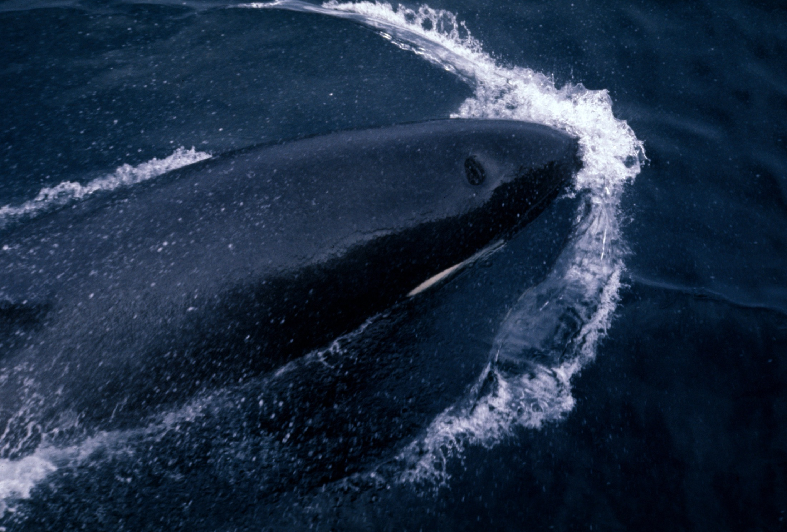
Orca · Orcinus orcaThe ocean's apex predator hunts in cultural tribes: some pods specialize on salmon, some on seals, some on hunting other whales, and pass the recipes down for generations.
the ocean is still mostly unmet
Discovered Just Now
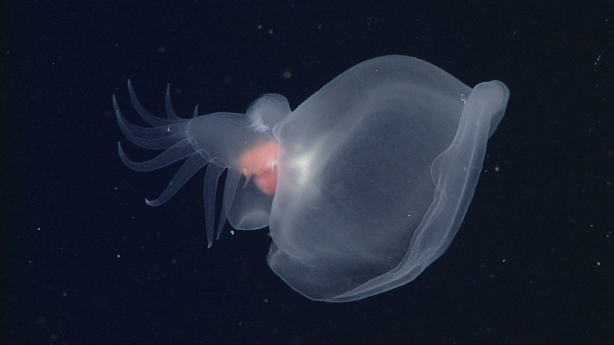
Mystery mollusc · Bathydevius caudactylus · named 2024Robots filmed this glowing sea slug 157 times over 20 years before anyone could name it: a slug that left the seafloor to swim the midnight zone, catching food in a hood.
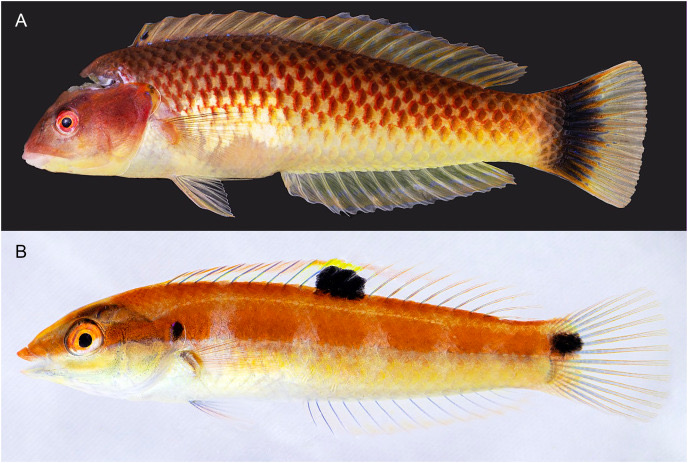
Tailspot wrasse · Halichoeres sanchezi · named 2024It slipped past science until 2024 because it changes outfit as it grows: the young, the females and the males look like three completely different fish.
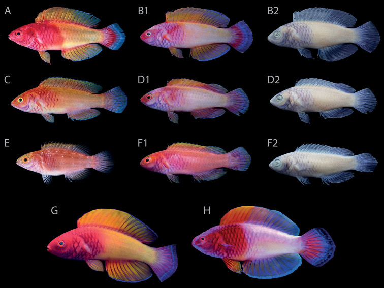
Rose-veiled fairy wrasse · Cirrhilabrus finifenmaa · named 2022Its name means rose in Dhivehi, and it is the first new species ever formally named by a Maldivian scientist, in their own language.St George's Cross medusa · Santjordia pagesi · named 2022Blood red with a stomach shaped exactly like the St George's Cross flag, it is known from a single volcanic crater on the seafloor and nowhere else on Earth.
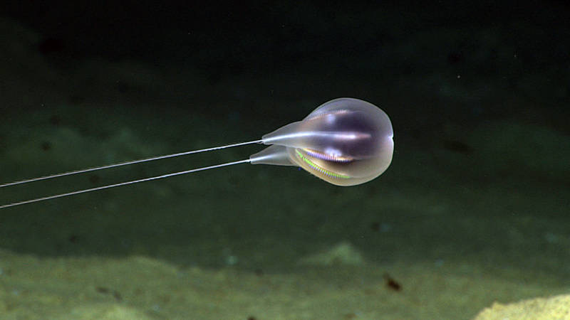
Duobrachium comb jelly · Duobrachium sparksae · named 2020It is the first animal ever named as a new species entirely from high-definition video, with no specimen caught; it drifts almost 4 km down like a tethered balloon.
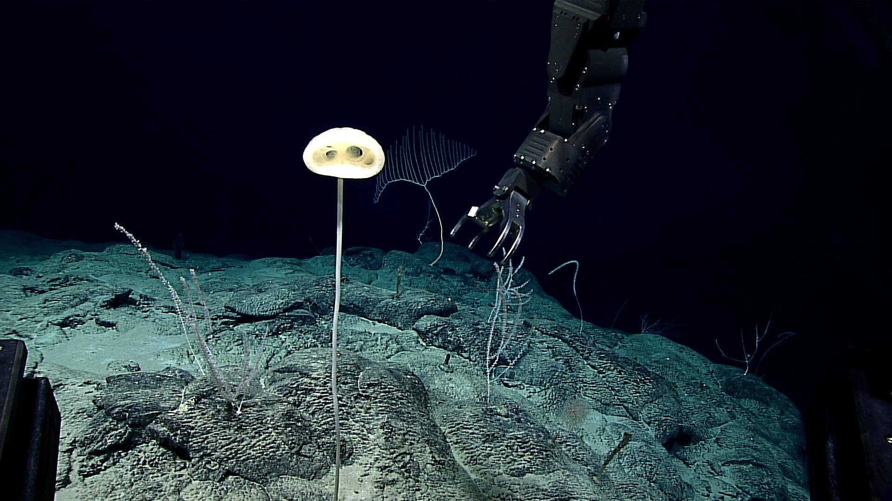
E.T. sponge · Advhena magnifica · named 2020Its name literally means magnificent alien; it looked so much like E.T. phoning home that scientists coined a whole new genus, Advhena, just for it.
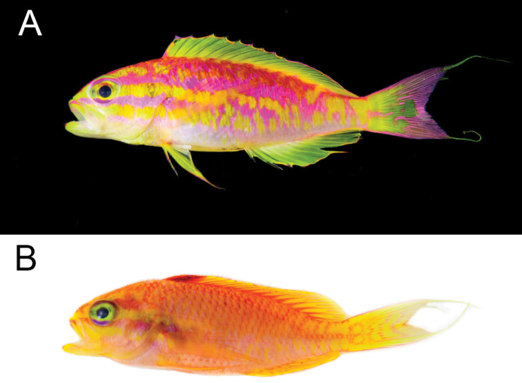
Aphrodite anthias · Tosanoides aphrodite · named 2018The divers who found it were so dazzled they failed to notice a shark circling above them, and named it for Aphrodite, the goddess of beauty.Japanese pygmy seahorse · Hippocampus japapigu · named 2018It is the size of a grain of rice, its nickname japapigu means Japan pig, and it carries a ridge of bony triangular bumps found on no other seahorse.